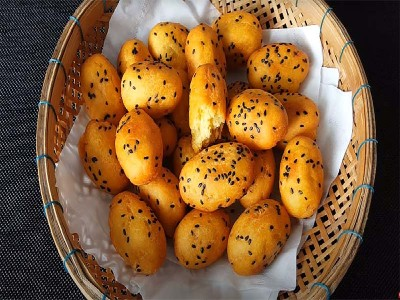

|  |
Food's name: Sweet potato cocoon▸ Ingredients:
▸ Time to prepare: 15 minutes ▸ Approx quantity: servings for 4 people |
▸ Detailed recipe:
- Peel potatoes, boil, and puree, add tapioca starch, coconut milk, sugar, mix well into a smooth mass.
- Shape the potatoes into pieces 3-5 cm long. Then roll in the tapioca flour so that the dough adheres evenly to the potato balls.
- Mix fried dough with a little water to make a paste.
- Put the oil pan on the stove until the oil is hot, then dip each potato ball in the deep-fried flour and then put it in the pan.
- When the potatoes turn yellow, take them out and put them on a plate that has been spread with greaseproof paper.
=> So you have prepared for yourself one of the foods with the best nutritional balance.
▸ Calories and related information: